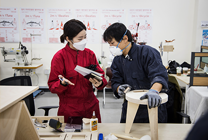
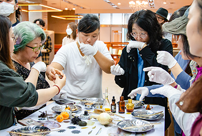
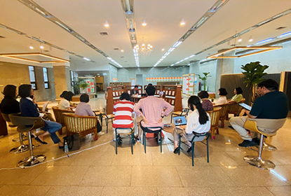
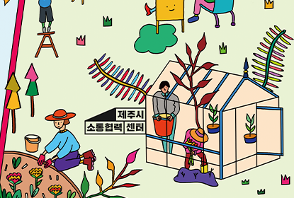
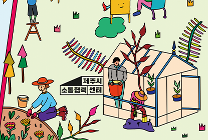

센터소개
소통 . 협력 플랫폼 공간 운영사업
소통협력공간을 이용하는 사람들 간에 서로의 관심사를 통해 상호작용과 소통이 일어날 수 있도록
기능별 매개 공간(플랫폼)을 운영합니다.
(*2021년 하반기 소통협력공간 개소 이후 운영 예정)

제작 공간
메이커문화를 기반으로 제주의 지속가능한 제조 문화 생태계 조성 및 확산을 위한 지역주체 활동 지원

F&B 및 공유주방
제주의 입말음식 발굴과 기록을 통해 생산자들을 연계하고 F&B 운영팀 구성 및 시범운영. 제주 페스트푸드 브랜딩 및 소품개발

라운지 및 질문도서관
제주에 관한 다양한 질문들을 상시 수집하여 그에 해당하는 정보(책, 영상 등), 마켓과 연계한 상품을 전시하는 공간 조성
 아동 돌봄 및 놀이 공간
지역주민 참여형 아동 돌봄 및 놀이공간 구성 및 운영. 공동육아 및 보육 커뮤니티 발굴•연계, 관련 서비스 제공

옥상정원
정원과 식물 관련 교육 및 워크숍 진행. 시민들과 함께하는 정원 만들기, 커뮤니티 가든 공간 활성화 프로그램 진행
아동 돌봄 및 놀이 공간
지역주민 참여형 아동 돌봄 및 놀이공간 구성 및 운영. 공동육아 및 보육 커뮤니티 발굴•연계, 관련 서비스 제공

옥상정원
정원과 식물 관련 교육 및 워크숍 진행. 시민들과 함께하는 정원 만들기, 커뮤니티 가든 공간 활성화 프로그램 진행
- 커뮤니티 매니징 포럼 개최 영상 <공간과 사람, 관계를 만드는 이야기>
-